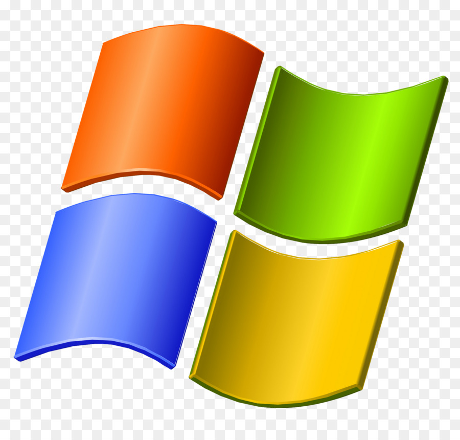
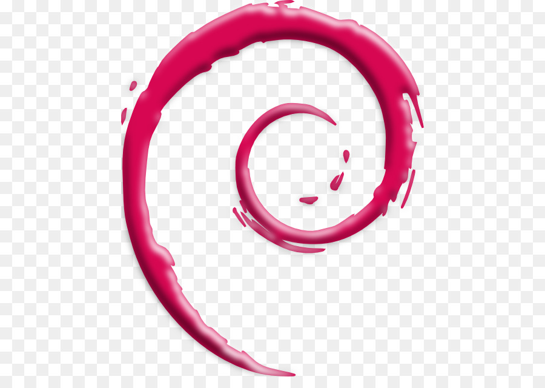

Flexbox DIV
OSX
macOS pohjautuu Nextstep-käyttöjärjestelmään, jonka Apple sai yrityskaupassa 1996 Steve Jobsin Next, Inc -yritykseltä. Käyttöjärjestelmän ydinosat perustuvat avoimeen lähdekoodiin, etupäässä BSD:hen. Käyttöjärjestelmän ydin
Windows
Microsoft Windows on PC:lle tarkoitettujen graafisten käyttöliittymien ja käyttöjärjestelmien perhe, jonka Microsoft esitteli vuonna 1985. Se on maailman käytetyin henkilökohtaisten tietokoneiden käyttöjärjestelmä, ja se toimitetaan tavallisesti tietokonelaitteiston mukana valmiiksi asennettuna. Sen markkinaosuus oli 88,12 prosenttia henkilökohtaisten tietokoneiden käyttöjärjestelmistä vuonna 2014
Linux
Linux viittaa Linux-ydintä käyttävien Unixin kaltaisten käyttöjärjestelmien perheeseen.[2] Linuxia voi käyttää monissa tietokonelaitteissa, muun muassa matkapuhelimissa, taulutietokoneissa, pelikonsoleissa, palvelimissa ja supertietokoneissa.[3][4][5][6] Linux on maailman käytetyin palvelinkäyttöjärjestelmä ja sitä käyttävät kaikki TOP500-listalla mukana olevat maailman tehokkaimmat supertietokoneet.[7][8]
Absoluuttinen DIV
macOS pohjautuu Nextstep-käyttöjärjestelmään, jonka Apple sai yrityskaupassa 1996 Steve Jobsin Next, Inc -yritykseltä. Käyttöjärjestelmän ydinosat perustuvat avoimeen lähdekoodiin, etupäässä BSD:hen. Käyttöjärjestelmän ydin XNU on Mach-tyyppisen mikroytimen ja 386BSD:hen perustuvien Unix-palvelujen hybridi. Apple on julkaissut nämä avoimen lähdekoodin osat nimellä Darwin vapaalla Apple Public Source License 2.0 -lisenssillä. Apple tukee OS X:llä PowerPC-, Intel- ja ARM-suoritinarkkitehtuureja. Apple sai oppia XNU:n ja NeXTStepin kehittämiseen Linuxista 1990-luvulla siitä kehittämällään MkLinux-versiollaan. MkLinuxin idea oli hajauttaa Linuxin monoliittinen arkkitehtuuri Mach-mikroytimen päälle. Ytimen päälle Apple rakensi oman ikkunointijärjestelmän ja käyttöliittymän nimeltä Aqua, joka muistutti rajapinnoiltaan NeXTSTEP/OpenStep-järjestelmää.lähde? Sitä kuitenkin uudistettiin huomattavasti näyttävämmäksi ja muistuttamaan enemmän aiempia klassisia Mac OS -versioita. OS X tarjoaa viisi API-rajapintaa sovelluksille: Cocoa, Carbon, POSIX, X11 sekä Java. Mac OS X:n oli alun perin tarkoitus tulla markkinoille jo vuonna 1999, mutta Apple päätti julkaista vielä yhden version klassisesta Mac OS -käyttöjärjestelmästään (Mac OS 9), mikä johtui Mac OS X:n kehitystyön viivästymisestä. Apple Mac OS X 10.0 julkaistiin lopulta maaliskuussa 2001 edelleen keskeneräisenä. Monen mielestäkenen mukaan? ensimmäinen Mac OS X 10.0 olikin paremmin verrattavissa hyvin tehtyyn betaan kuin valmiiseen tuotantoversioon. Ensimmäinen viimeisteltynä pidettykenen mukaan? Mac OS X -versio 10.1 sisälsi tärkeitä ominaisuuksia, kuten CD-levyjen kirjoitus- ja DVD-levyjen toistomahdollisuuden. Mac OS X 10.1 julkaistiin syyskuussa 2001. Edellisen version käyttäjille tämä päivitys oli ilmainen. Mac OS X -käyttöjärjestelmän nimessä käytetty X tulee roomalaisesta numerosta X, ’kymmenen’. Samalla X viittaa myös Unixiin, jonka perillinen Mac OS X on, toisin kuin sen edeltäjät klassisen Mac OS -sarjan käyttöjärjestelmät.
Inline-block DIV
Windows kehitettiin alun perin MS-DOSin käyttöliittymäksi, ohjelmaksi, jolla pyrittiin helpottamaan IBM:n valmistamien IBM PC -koneiden ja yhteensopivien henkilökohtaisten tietokoneiden käyttöä. Ensimmäinen versio julkaistiin vuonna 1985. Tarkoituksena oli parantaa niiden kilpailumahdollisuuksia Applen Macintosh-koneita vastaan. Yhteistyötä tehtiin paljon IBM:n kanssa, ja Microsoft oli kehittämässä IBM:n OS/2-käyttöjärjestelmää. Windows tarkoittaa ikkunoita. Graafisista käyttöjärjestelmistä käytettiin 1980-luvulla monesti nimeä ikkunointisysteemi (engl. windowing system), koska niissä oli siirreltäviä ”ikkunoita”. Windowsin kehitysvaiheessa siitä käytettiin nimityksiä Interface Manager ja Interface Office Manager, kunnes nimeksi valittiin Microsoft Windows.[5] Windowsin käyttöliittymä kuuluu siihen visuaalisten käyttöliittymien perheeseen, joka pohjautuu Xeroxin alkuperäiseen tutkimushankkeeseen. Maaliskuussa 1988 Apple Computer haastoi Microsoftin oikeuteen käyttöliittymänsä ulkoasun kopioinnista. Juttu päättyi Microsoftin eduksi vuonna 1993.[6] Kesken jutun Xerox haastoi Applen oikeuteen graafisen käyttöliittymän kopioinnista.[7] Windows mahdollisti myös tietokoneen koko muistin hyödyntämisen MS-DOSin 640 kiB:n rajoituksen sijaan. Vähitellen DOS-ohjelmat alkoivat siirtyä graafiseen ympäristöön. Vuonna 1995 julkaistu Windows 95 oli seuraava askel: se uudisti muun muassa käyttöliittymän ja mahdollisti pitkien (yli 8-merkkisten) tiedostonimien käytön. Windows 95:lle julkaistu DirectX-rajapinta mahdollisti viimein myös pelien siirtymisen Windows-ympäristöön. Windows-käyttöjärjestelmäpakettiin lisättiin uusien versioiden myötä kiinteästi kytkettyjä sovellusohjelmia, kuten Internet Explorer ja Windows Media Player. Windows 3.0:n menestyksen myötä Microsoft sanoutui irti OS/2-yhteistyöstä ja aloitti vuonna 1988 oman ammattikäyttöön suunnatun käyttöjärjestelmänsä kehityksen. Windows NT perustui paljolti OS/2:een, kiitos DEC:lta palkatun pääsuunnittelija Dave Cutlerin. Microsoft aloitti Windows NT:n toimitukset vuonna 1993. Ensimmäisen version versionumeroksi tuli suoraan 3.1, koska OS/2 oli tuolloin jo versiossa 3. Ensimmäiset versiot eivät menestyneet, ja laajalti käytetty tuli vasta Windows NT 4.0:sta. NT suunniteltiin vakautta vaativiin työasemiin ja palvelimiin. Koska se ei tarvinnut alleen 16-bittistä DOS-käyttöjärjestelmää, se pystyi käyttämään täysipainoisesti hyväkseen Intelin 32-bittisten x86-suorittimien muistinsuojaus- ja moniajo-ominaisuuksia. Käyttöjärjestelmä siirrettiin myös MIPS-, Alpha- ja PowerPC-suorittimille. NT tuki myös moniprosessorointia. Microsoft oli jo pitkään yrittänyt sulauttaa yritys- ja kotikäyttäjien Windowseja yhteen, mutta se tapahtui vasta vuonna 2001, kun julkaistiin Windows Me:n ja Windows 2000:n seuraaja, NT-teknologiaan pohjautuva Windows XP. Sen jälkeen pidettiin muutaman vuoden tauko, kunnes julkaistiin Windows Vista vuonna 2007. Kaksi vuotta myöhemmin julkaistiin Windows 7. Vuonna 2012 julkaistiin Windows 8 ja seuraavana vuonna päivitys Windows 8.1. Uusin Windows-versio on nimeltään Windows 10. Windowsista julkaistiin ensimmäinen kannettaviin pienlaitteisiin tarkoitettu Windows CE -versio vuonna 1996.
Float DIV
Linux viittaa Linux-ydintä käyttävien Unixin kaltaisten käyttöjärjestelmien perheeseen.[2] Linuxia voi käyttää monissa tietokonelaitteissa, muun muassa matkapuhelimissa, taulutietokoneissa, pelikonsoleissa, palvelimissa ja supertietokoneissa.[3][4][5][6] Linux on maailman käytetyin palvelinkäyttöjärjestelmä ja sitä käyttävät kaikki TOP500-listalla mukana olevat maailman tehokkaimmat supertietokoneet.[7][8] Nimi ”Linux” tulee Linux-ytimestä, jonka alun perin kehitti Linus Torvalds vuonna 1991. Linuxista käytetään joskus Free Software Foundationin suosittelemaa nimeä GNU/Linux, sillä tyypillisessä Linux-käyttöjärjestelmässä GNU-projektin ohjelmistot muodostavat suuren osan.[9] Linux on tunnettu esimerkki yhteistyöstä vapaiden ja avoimen lähdekoodin ohjelmistojen kehityksessä: useimmiten kuka tahansa saa vapaasti käyttää, muokata ja levittää ohjelmistojen lähdekoodia sekä kaupallisesti että epäkaupallisesti erilaisten lisenssien, kuten GPL-lisenssin ehdoilla. Linuxia levitetään yleensä tuotteistettuina jakelupaketteina, johon jakelija on koostanut jakelun käyttötarkoituksen mukaisen joukon ohjelmistoja ja ohjelmakirjastoja sekä asennuspaketin lisäksi yleensä myös pakettivaraston lisäohjelmien ja päivitysten asentamiseksi. Jakelun tuottaja hoitaa jakelun kehitystä ja käyttäjätukea, vaikkakin itse ohjelmistot tulevat lukuisilta muilta itsenäisiltä tahoilta. Joitain suosittuja valtavirtaa edustavia Linux-jakelupaketteja ovat Debian (ja sen johdannaiset kuten Ubuntu), Fedora ja openSUSE. Varsinkin työpöytäkäyttöön suunnattu jakelu sisältää yleensä graafisen ympäristön, johon kuuluu X Window System -ikkunointijärjestelmä sekä esimerkiksi GNOME ja KDE -työpöytäympäristöt. Vanhemmille tai vähemmän tehokkaille tietokoneille suunnatut jakelupaketit saattavat käyttää kevyempiä työpöytäympäristöjä, kuten LXDE tai Xfce. Palvelinkäyttöön tarkoitetussa jakelussa graafinen ympäristö saatetaan jättää kokonaan pois. Koska Linuxia saa jakaa eteenpäin vapaasti, kuka tahansa voi luoda jakelupaketin mihin tahansa tarkoitukseen. Työpöytä-Linuxeissa yleisesti käytettyjä ohjelmia ovat Mozilla Firefox -selain, LibreOffice-toimisto-ohjelmisto ja GIMP-kuvankäsittelyohjelma.